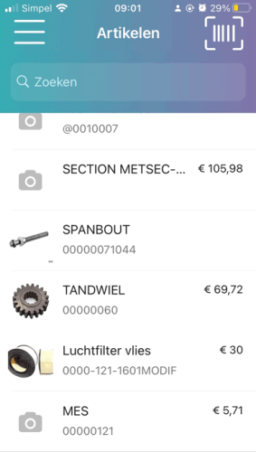

Ga naar het menu  of terug <.
of terug <.
Kies voor de knop Artikelen.
-
Het scherm Artikelen verschijnt.
-
De laatste 10 bekeken artikelen worden weergegeven.
Geef de <zoekterm> in bij Zoeken.

-
De artikelen die voldoen aan de zoekterm worden weergegeven tijdens het intypen.
De volgende tabbladen zijn aanwezig:
-
Algemeen met:
-
Afbeelding / omschrijving / artikelnr.
-
EAN-code
-
Verkoopprijs
-
Adviesprijs
-
Prijs per <stuk>
-
Verkopen per <stuk>.
-
-
Afbeeldingen
-
De volgende acties zijn mogelijk: (zie ook FAQ):
-
Foto maken
-
Selecteren uit galerij
-
-